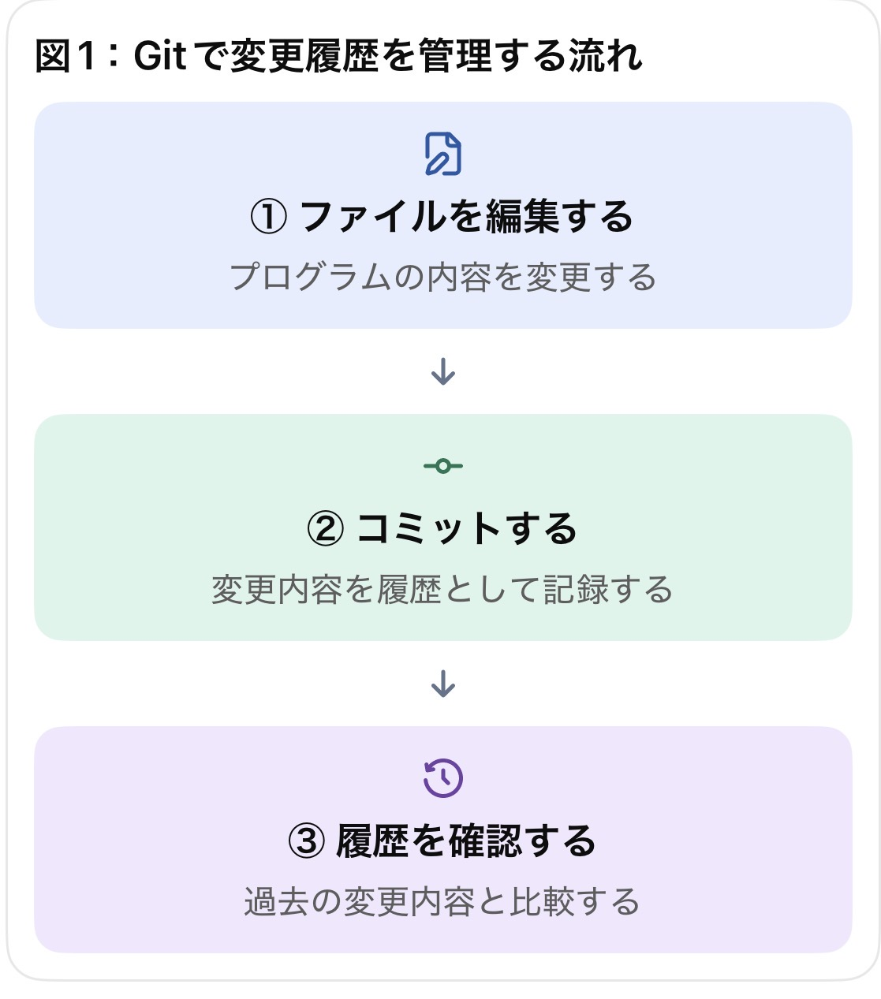
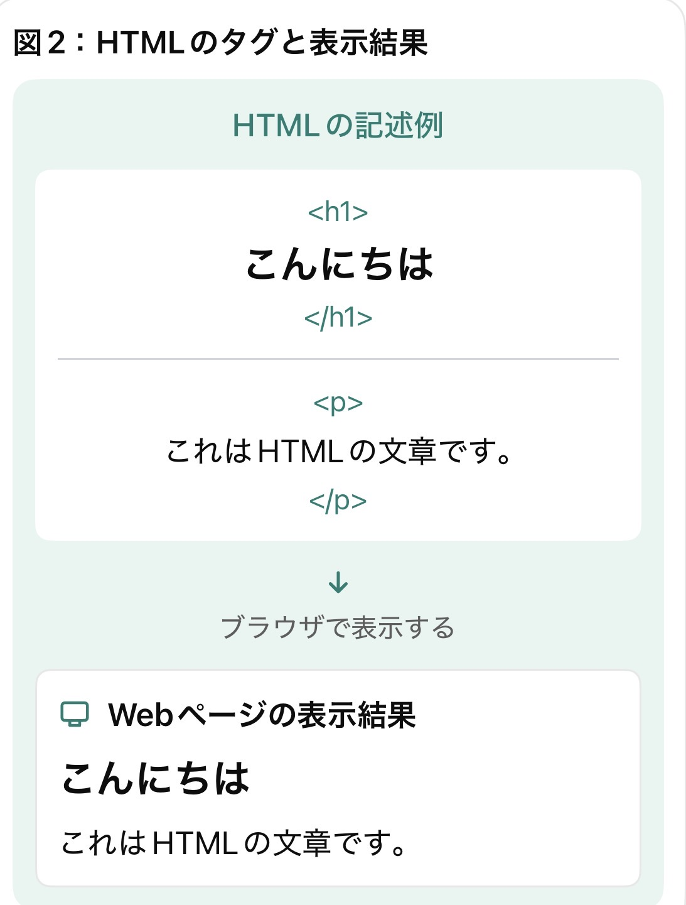
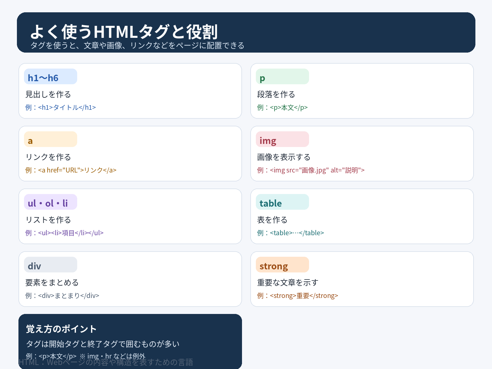

Gitとは
Gitとは、ファイルの変更履歴を記録・管理するためのバージョン管理システムです。プログラムのコードを変更したときに、変更内容を記録したり、以前の状態と比較したりすることができます。
例えば、プログラムを間違えて変更した場合でも、過去の記録を確認することで、変更前の状態に戻しやすくなります。また、複数の人が開発するときにも、変更内容を管理するのに役立ちます。
Gitの基本的な仕組み

Gitの基本用語
- リポジトリ：ファイルや変更履歴を保存する場所。
- コミット：変更内容をひとまとまりとして記録すること。
- ブランチ：元の作業から分けて、別の作業を進めるための仕組み。
- マージ：別々に進めた変更を統合すること。
GItとGitHubの違い
Gitはファイルの変更履歴を管理するためのソフトウェアです。
一方、GitHubはGitを利用して、インターネット上でファイルを保存・共有し、複数人での共同開発を支援するWebサービスです。
HTMLとは
HTMLとはWebページの構造や内容を記述するためのマークアップ言語です。
見出し、文章、画像、リンクなどをタグによって指定します。
例えば、見出しには「h1」、段落には「p」、リンクには「a」を使用します。
HTMLを使うことで、Webページの情報を整理して表示できます。
HTMLの基本的な仕組み

HTMLの基本用語
- タグ：文章の種類や範囲を指定する基準。
- 要素：タグとその間に書かれた内容を組み合わせたもの。
- 属性：タグに追加情報や設定を与える記述。
よく使われるHTMLタグ

HTMLとCSSの関係
HTMLがWebページの構造を作るのに対して、CSSは文字の色や大きさ、配置、背景などの見た目を整えます。
それぞれの役割を分けることで、内容を整理しながら見やすいWebページを作ることができます。
参考文献
GitとGitHubの違いをわかりやすく解説｜基本機能・使い方・連携方法
HTMLとは？初心者向けに基礎知識を分かりやすく解説